asha: shared five-person research board
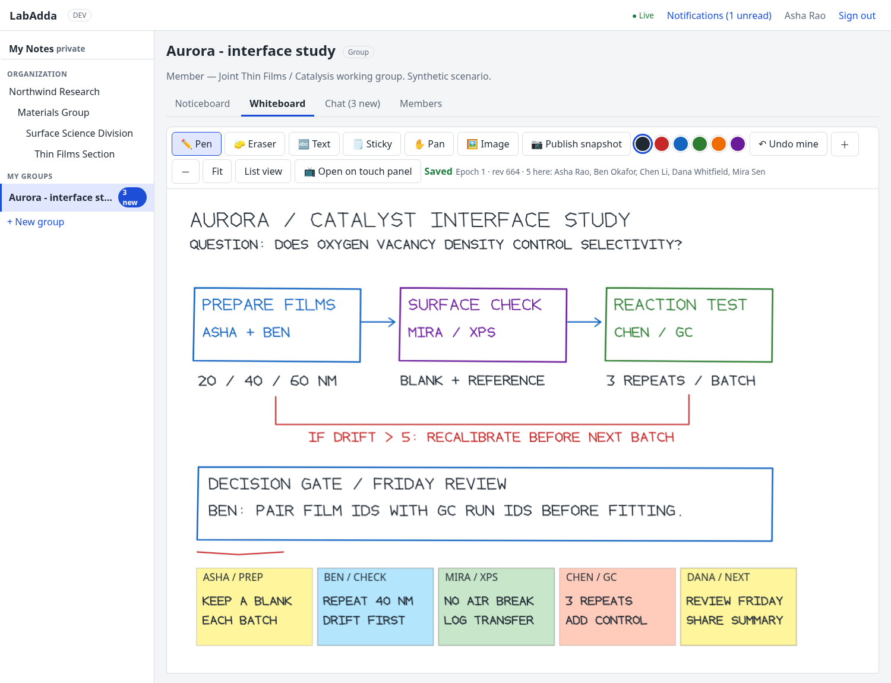
Actual application screenshots. Entirely synthetic data. Private colleague attachments use a two-person group, not direct messages. Native pen strokes and editable stickies come from the saved SVG/JSON fixtures.

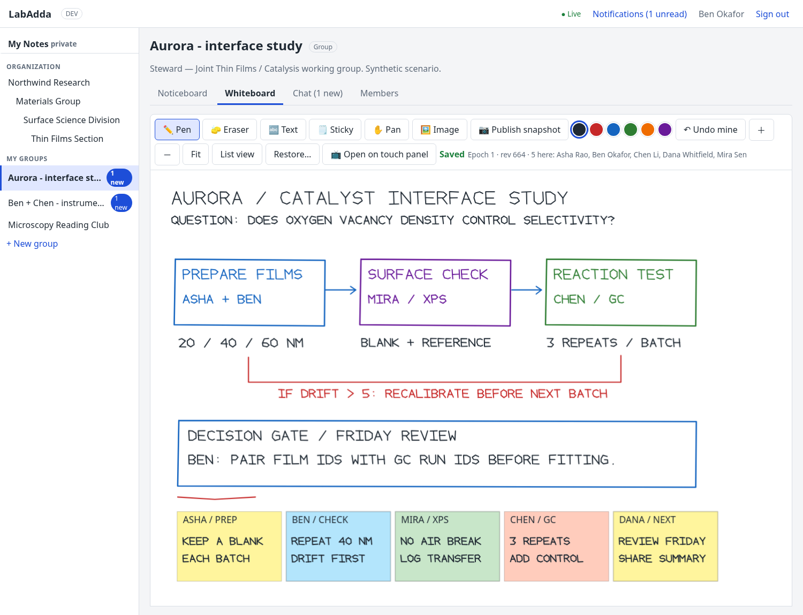
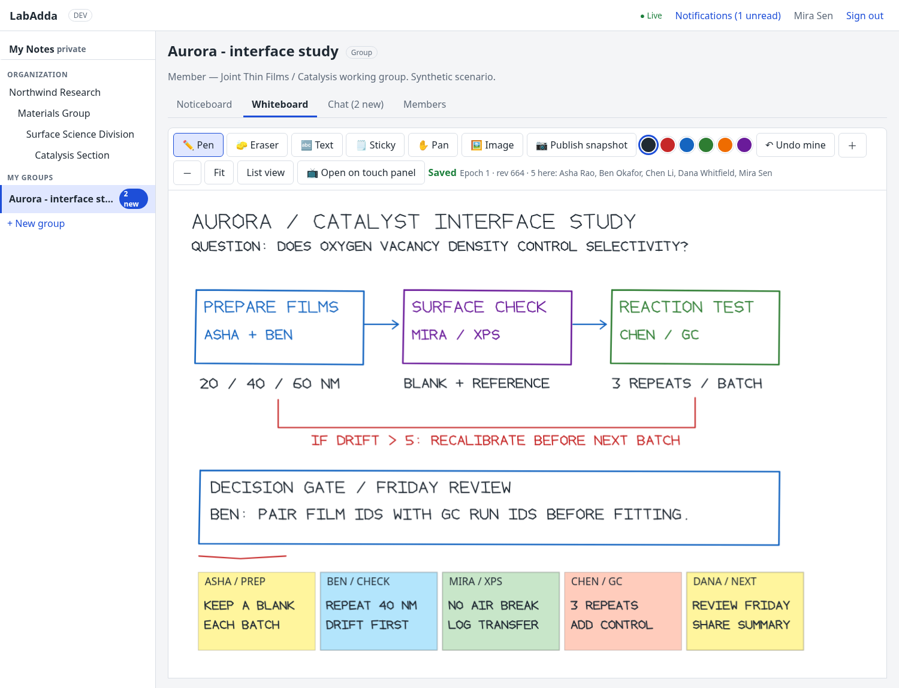
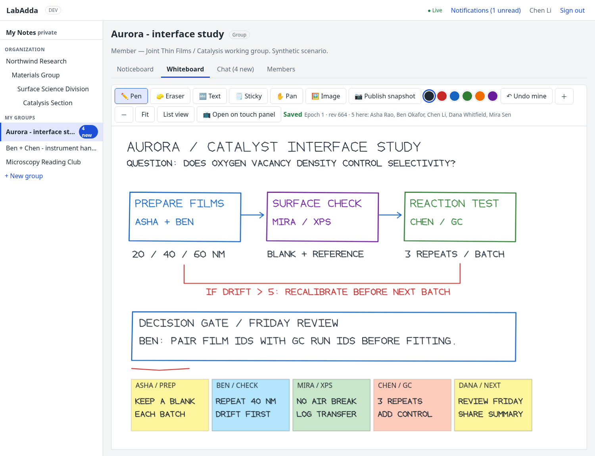
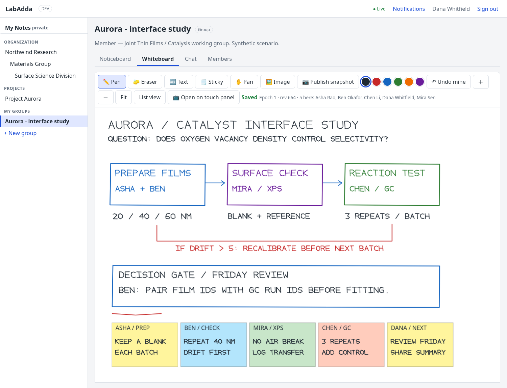
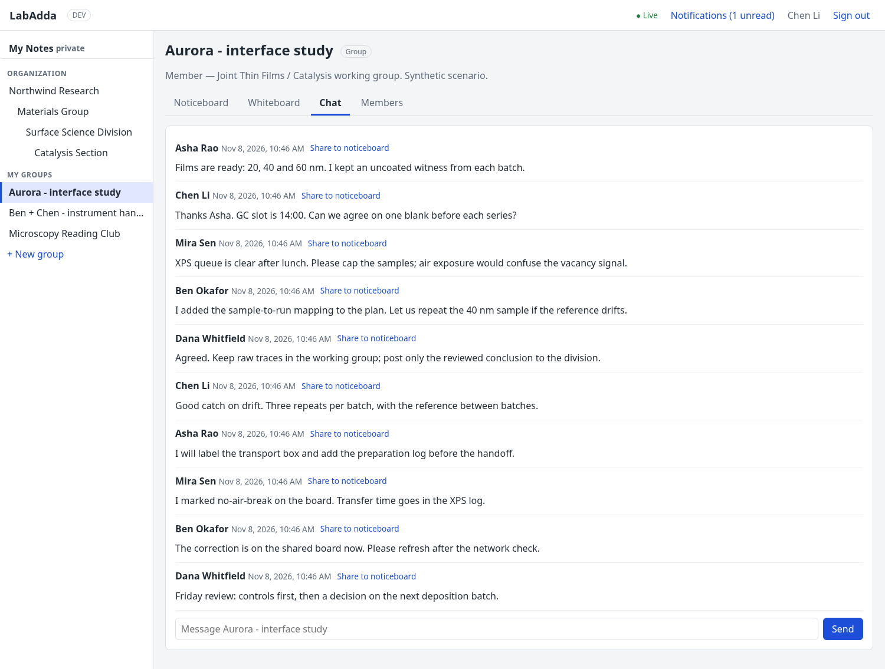
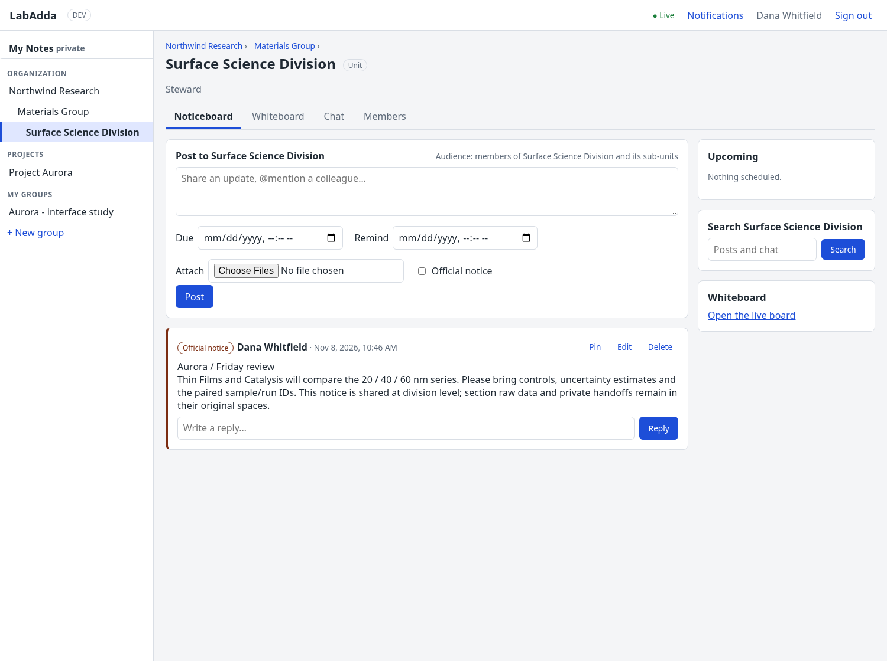
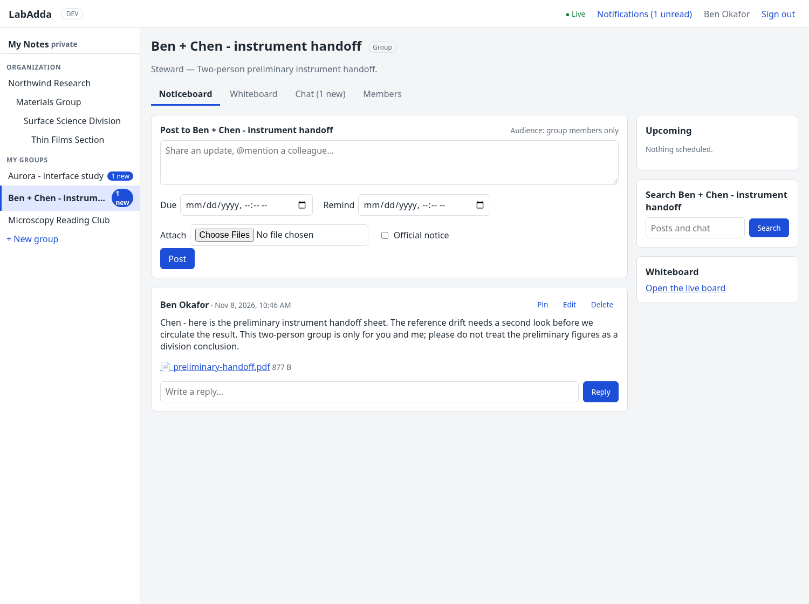
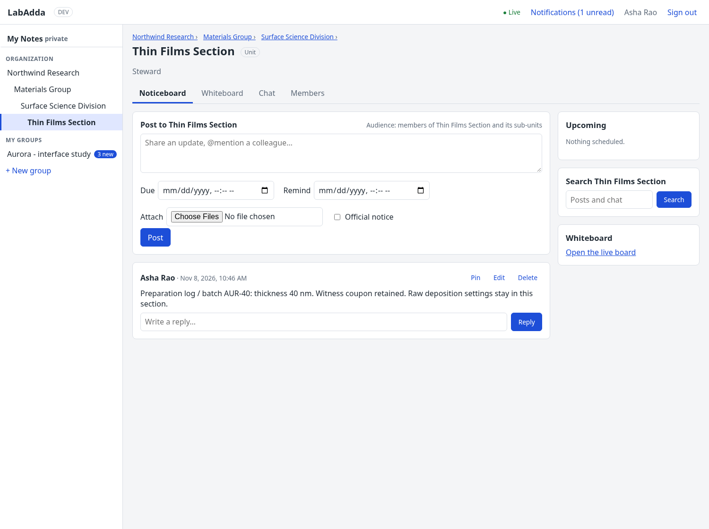
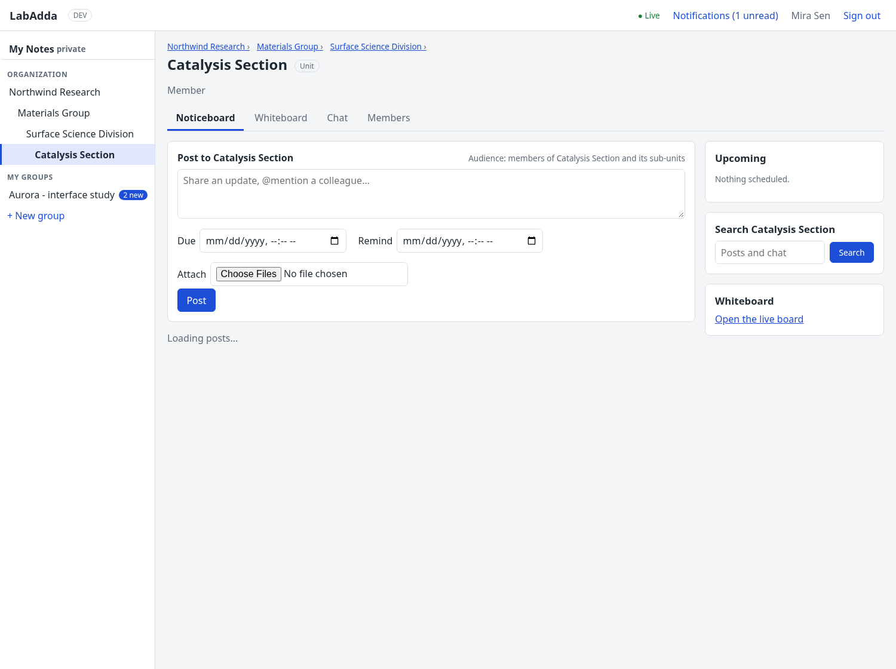
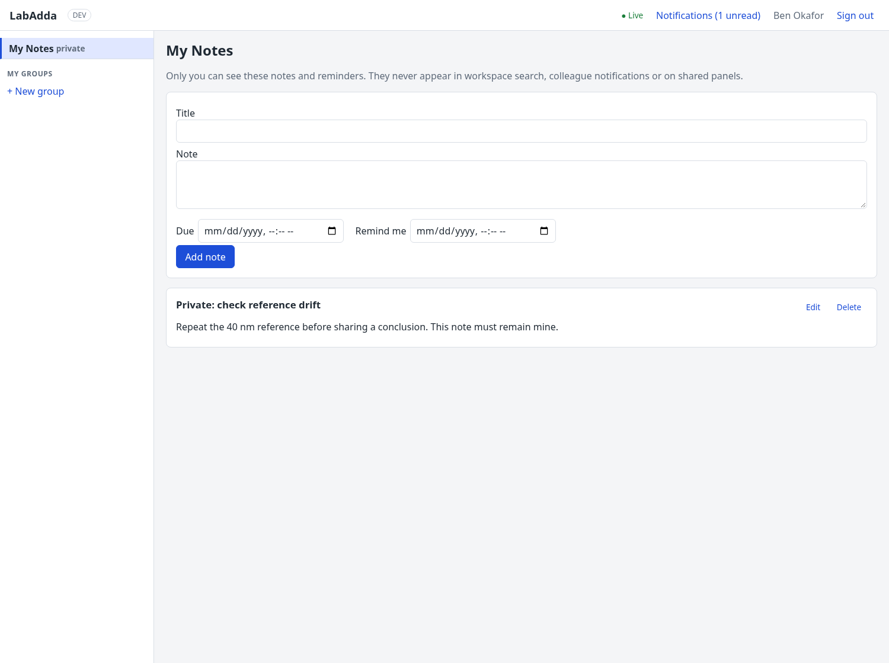